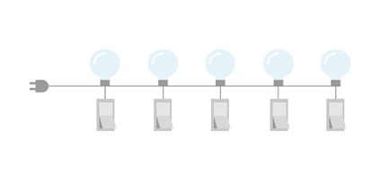
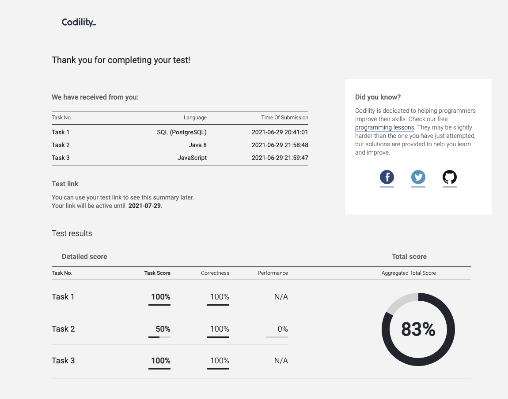

前幾天投了104履歷，想看看自己在市場上還有沒有價值ＱＱ，然後在昨天時，收到104的一封信，是要先做一份類似小測驗，收到當下滿開心的，畢竟沒有發我無聲卡
於是當天下班，我就很興奮地準備來寫這份小測驗，其中遇到一題滿有趣的，順手紀錄一下
There are N bulbs, numbered from 1 to N, arranged in a row. The first bulb is
plugged into the power socket and each successive bulb is connected to the
previous one (the second bulb to the first, the third bulb to the second, etc.).
Initially, all the bulbs are turned off. At moment K (for K from 0 to N-1), we
turn on the A[K]-th bulb. A bulb shines if it is on and all the previous bulbs are
turned on too.
Write a function solution that, given an array A of N different integers from
1 to N, returns the number of moments for which every turned on bulb
shines.
Examples:
1. Given A=[2, 1, 3, 5, 4], the function should return 3.
- At the 0th moment only the 2nd bulb is turned on, but it does
not shine because the previous one is not on.
At the 1st moment two bulbs are turned on (1st and 2nd) and
both of them shine.
- At the 2nd moment three bulbs are turned on (1st, 2nd and
3rd) and all of them shine.
At the 3rd moment four bulbs are turned on (1st, 2nd, 3rd and
5th), but the 5th bulb does not shine because the previous one
is not turned on.
- At the 4th moment five bulbs are turned on (1st, 2nd, 3rd, 4th
and 5th) and all five of them shine.
There are three moments (1st, 2nd and 4th) when every turned on bulb
shines.
2. Given A=[2, 3, 4, 1, 5], the function should return 2 (at the 3rd and 4th
moment every turned on bulb shines).
3. Given A=[1, 3, 4, 2, 5], the function should return 3 (at the 0th, 3rd and 4th
moment every turned on bulb shines).
Write an efficient algorithm for the following assumptions:
N is an integer within the range [1..100,000];
the elements of A are all distinct;
each element of array A is an integer within the range [1 ..N].

這是題目，而我的想法是，以我的了解是，開到第N次時，要亮的的條件是前面燈泡1到燈泡N都必須打開，所以我就每次都檢查，假設開到第三次，我就檢查前面一到三開啟哪的燈，若這中間有大於三的數字，表示說1~3其中一組沒亮，那整組燈就不會亮，於是我開始解題
public int sulation(int[] A){
int shineTimes = 0;
for(int index:A){
int round = index + 1;
int[] checkArray = Arrays.copyOfRange(A, 0, round);
boolean isShine = true;
for(int check:checkArray){
if(check>round){
isShine = false;
}
}
if(isShine){
shineTimes++;
}
}
return shineTimes;
}
其中子陣列Arrays.copyOfRange(A, 0, round)這個方法是網路上查的，哈哈
結果

沒想到Performence是0，我自己覺得我的解法不錯的說，若有更好的解法，希望大家能跟我分享～